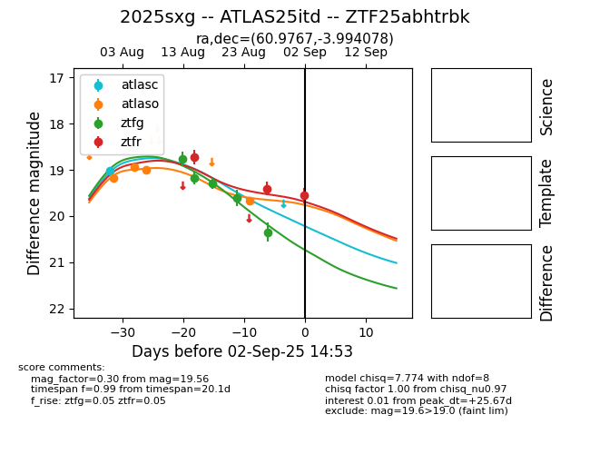

Target 2025sxg at 2025-08-26 14:02, see:
FINK: fink-portal.org/ZTF25abhtrbk
Lasair: lasair-ztf.lsst.ac.uk/objects/ZTF25abhtrbk
ALeRCE: alerce.online/object/ZTF25abhtrbk
TNS: wis-tns.org/object/2025sxg
YSE: ziggy.ucolick.org/yse/transient_detail/2025sxg
alt names
ZTF25abhtrbk (ztf,fink)
2025sxg (tns,yse)
ATLAS25itd (atlas)
coordinates:
equatorial (ra, dec) = (60.9767,-3.99408)
galactic (l, b) = (194.9061,-38.64415)
photometry
last atlasc=19.02, atlaso=19.77, ztfg=19.61, ztfr=18.73
1 atlasc, 4 atlaso, 4 ztfg, 1 ztfr detections
